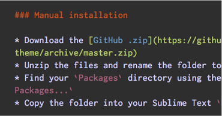

Three heights of tabs
Afterglow Theme supports three different heights in the tabs. Just have to change the user preferences file.

Support for Markdwon
In addition to the default color scheme, you have a specific .tmTheme for Markdown syntax.

Differents colors
You have different colors (orange, blue, magenta and green) that blend perfectly with the default color scheme.